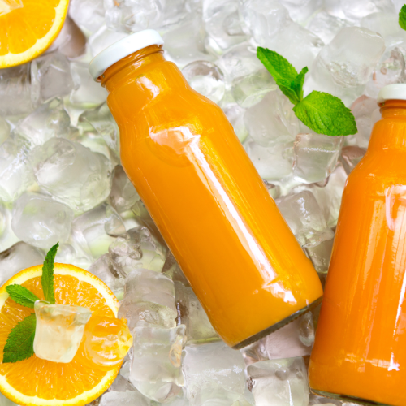

Recetas

1
2
3
Insumos
Menta Albahaca
Berries Campestres
Limón de Pica
blog
Descubre los beneficios de nuestros JUGOS
Mitos y verdades sobre los jugos verdes
En cada nueva temporada de verano se inaugura la ingesta de los famosos jugos verdes desintoxicantes, limón, pepino, apio y hasta kale. Pero en este artículo te daremos el dato perfecto para sacarle el mayor "jugo" a tu rutina.
Desintoxica tu cuerpo con jugo de zanahorias
El poder de la zanahoria como nunca antes lo has visto: hecha jugo. Este elixir lleno de betacarotenos posee el poder de librarnos de los parásitos intestinales que se van instalando en nuestros cuerpos a través del tiempo.